Práctica 2.3 – Proxy Inverso con Nginx
Jaime Grueso Martin
Indice
Confifuraciones
Nginx Servidor Web
Primeramente se debe cambiar el nombre de la web a webserver, lo que implica que se deba cambiar el nombre
del sitio web dentro del archivo de configuración y finalmente eliminar el enlace simbolico previo y crear uno nuevo
con el nombre del archivo.
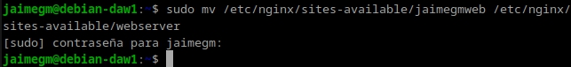
El cual se editará de la siguinte manera y se le cambiará el puerto de escucha al 8080
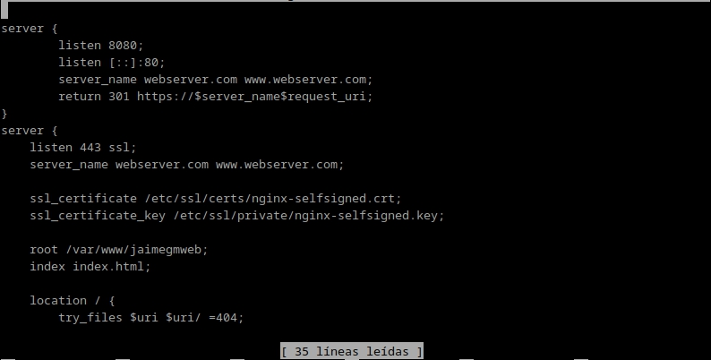
Como se cambió de nombre el directorio, al ejecutar el comando unlink, se eliminará el archivo con sudo rm -r
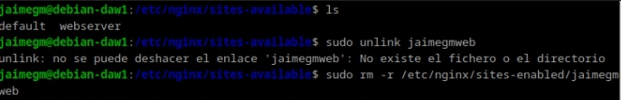
Se creará el nuevo enlace simbolico y se reiniciará el servicio para que se apliquen los cambios
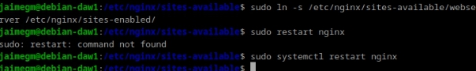
Nginx Proxy Inverso
A su vez, se creará un archivo en la máquina donde hayamos decidido crear el proxy en la ruta /etc/nginx/sites-available/ejemplo-proxy
El cual es más simple de editar ya que no tiene tanto contenido como el de webserver. Se indicará el pueto de escucha, el nombre del dominio modificado previamente, el proxy-pass que será a donde se redirijan las peticiones, por lo que habrá que poner la ip de la máquina que se esté utilizando como webserver
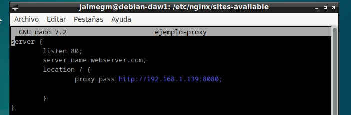
Se creará un enlace simbólico para este archivo.
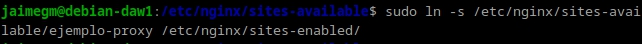
A continuación se procederá a modificar el archivo hosts de la maquina anfitriona para que la ip coincida con la de la maquina de webserver
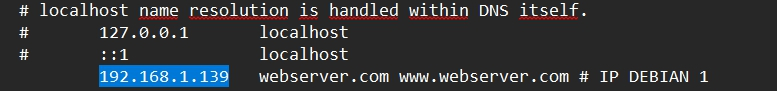
Ahora, cuando se intente acceder a http://www.ejemplo-proxy.com, se estará accediendo al proxy, que se redirigirá a webserver
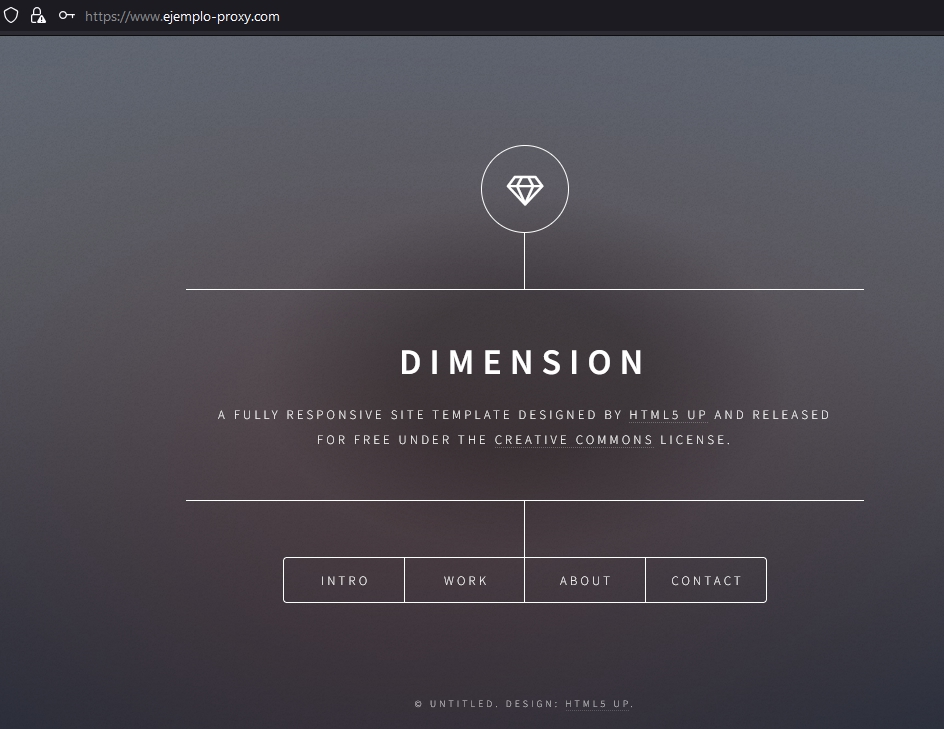
Comprobaciones
Si se accede a la web se podrá ver en los access.log que están llegando las peticiones correspondientes
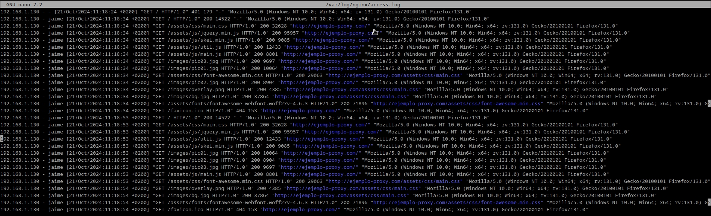
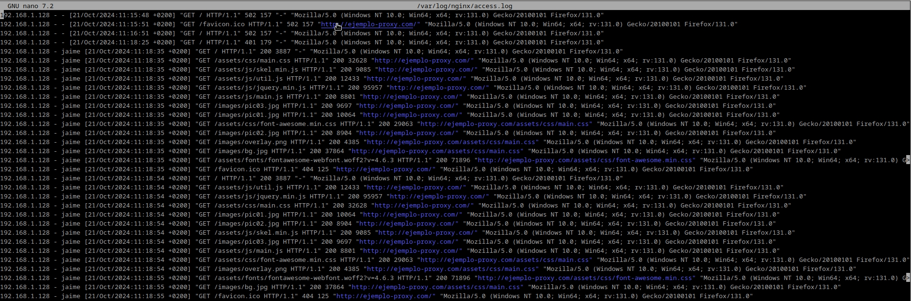
Y si se hace uso de las herramientas de desarrollador de Firefox. Pulsando F12 en el navegador os aparecerán unas herramientas. Se buscará la herramienta de Red y se activará la opción de desactivar la caché.
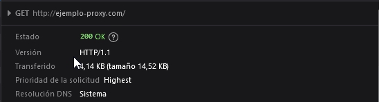
Añadiendo Cabeceras
Se va a configurar tanto el proxy inverso como el servidor web para que añadan cada uno la cabecera “Host”.
Se deberá añadir primeramente la cabecera al archivo de configuracion del proxy inverso de la siguiente manera.
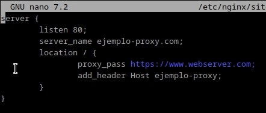
Se reiniciará el servicio Nginx y se comprobará que en el buscador con la herramienta de Red, aparezca el nombre que se le ha asignado.
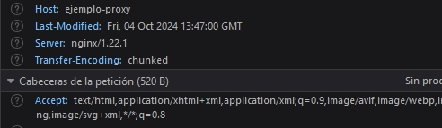
Ahora se procederá a hacerlo para el servidor web. El proceso es el mismo que para el proxy inverso.
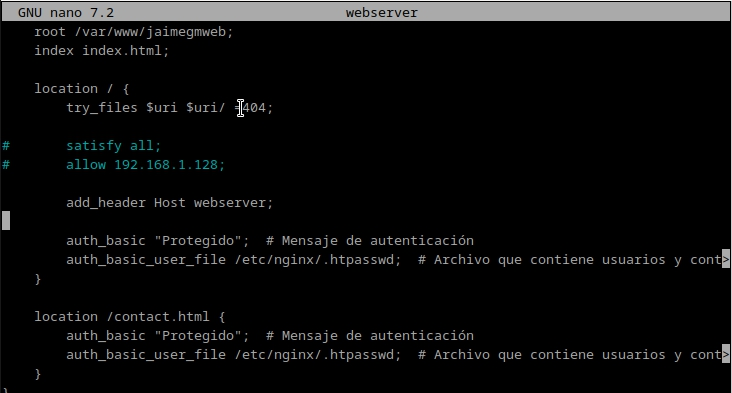
Para este proceso se han modificado sos archivos mas, el archivo hosts de la máquina anfitriona y el archivo hosts de la máquina donde esta configurado el proxy inverso.
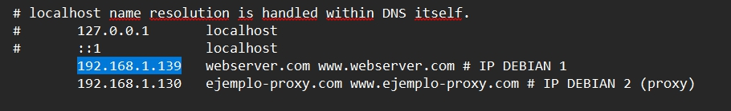
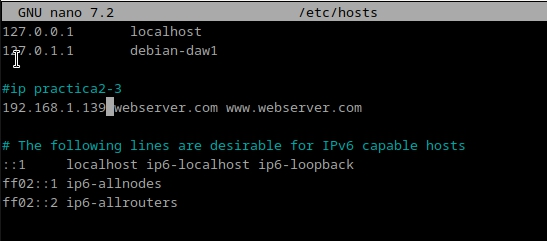